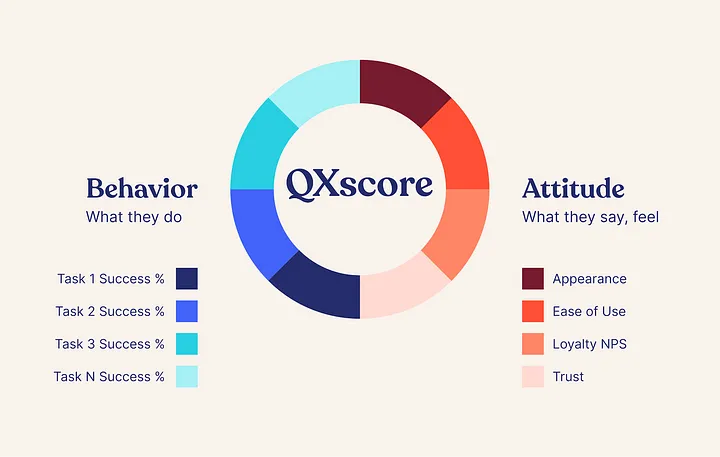

Hey there, design enthusiasts! Ever wonder what makes your favorite apps, websites, and products so cool? It’s not just about looking pretty; there’s a whole science behind it! Think of design like baking the perfect cake — there’s the recipe (metrics), taste-testing (testing), and adding those special ingredients (additional topics). But don’t worry, we’re here to make it as easy as pie (or cake). So, grab a seat and get ready to dive into the world of design with us — it’s gonna be a blast!
UX metrics are like checking if your digital cake (app, website, product) is delicious and easy to eat. They reveal how users interact with it, showing if they find what they need easily, enjoy the experience, and even come back for more. By measuring things like time spent using it, task completion ease, frustration levels, and user feedback, you can see what works well and what needs improvement. Just like tasting your cake, UX metrics help you create a delightful digital experience that people love to use.

1. Behavioral Metrics:These metrics focus on how users actually interact with the product, revealing their actions and behaviors. They provide insights into usability and efficiency.
2. Attitudinal Metrics:These metrics capture users’ perceptions and feelings about the product, revealing their emotional responses and overall satisfaction.
3. Engagement Metrics:These metrics measure how long users interact with the product and how deeply they engage with its features.
Design metrics act as the measuring instruments in the design process, enabling us to objectively assess the effectiveness of our design decisions. By tracking key performance indicators, we gain a clear understanding of how users interact with our product and identify areas for improvement.
Real-life Example: A company revamps its website, aiming to increase online sales. By analyzing website traffic data and conversion rates, they discover a significant drop-off in the checkout process. User behavior analysis reveals confusing form elements and a lack of clear calls to action. Based on these insights, the design team streamlines the checkout flow and optimizes the layout, leading to a significant increase in conversion rates.
Real-life Example: A news organization observes a decline in user engagement on their mobile app. Analyzing engagement metrics reveals users are quickly scrolling through articles without fully reading them. The design team implements a “Read Later” feature and optimizes the article layout for better readability, resulting in longer engagement times and a more immersive reading experience.
Real-life Example: A bank implements a new interface for its online banking platform. User satisfaction surveys reveal that customers find the interface confusing and the navigation cumbersome. Based on this feedback, the design team revisits the layout, simplifies the navigation structure, and provides clearer visual cues, leading to improved user satisfaction and a more intuitive banking experience.
Just as a chef meticulously tests their dishes before serving them, user testing is an essential component of the design process. It involves simulating real-world user interactions to identify and address any usability issues that might hinder the user experience.
Real-life Example: A company revamps Real-life Example: During usability testing for a new e-commerce platform, the design team observes users struggling to locate specific product categories within the navigation menu. Based on these observations, the team reorganizes the navigation structure and implements clearer category labels, resulting in a more intuitive and efficient shopping experience.
Real-life Example: A news organization Real-life Example: A government agency redesigns its website to provide better access to public information. Accessibility testing reveals that the website is not compatible with screen reader software used by visually impaired individuals. The design team implements changes to improve the website’s accessibility, ensuring equal access to information for all users.
While design metrics and testing provide valuable tools for building successful products, it’s crucial to remember that design is ultimately a human-centered endeavor. It involves empathy, creativity, and a deep understanding of human behavior.
1.AARRR Framework: This popular framework focuses on key metrics throughout the customer lifecycle:
2.RARRA Framework : This framework prioritizes retention over acquisition, acknowledging the importance of keeping existing users happy.

Customer Experience (CX) Frameworks:
This framework focuses on user emotions and their interaction with the product:

Crafting exceptional products is like baking the perfect cake: it requires the right recipe (metrics), careful testing, and a dash of human magic. Metrics act as your measuring tools, revealing how users interact with your design and what needs improvement. Testing, like taste-testing, ensures a smooth user experience by identifying and fixing any usability issues. But don’t forget the human touch! Great design goes beyond functionality; it considers user emotions, tells a compelling story, and continuously adapts based on feedback. By embracing these elements, you can create products that not only work well but also leave a lasting positive impression on the people who use them. Remember, design is a journey, so keep testing, learning, and iterating to make your product truly delightful and user-friendly.